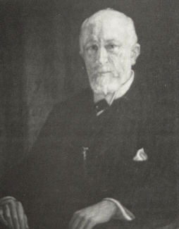

|  |
Bjerrum scotoma = a visual field defect characteristic of glaucoma. It is a nerve fiber bundle defect extending from the blind spot, sweeping around the macular region and ending in a straight line on the nasal side corresponding to the temporal raphe in the retina.
Jannik Petersen Bjerrum was born 26th December 1851 in Skarbak, a village
in the most southern part of Jutland in the border district between the
Danish kingdom and the Duchy of Schleswig-Holstein. This was a highly disputed
area and the object of numerous political debates and military battles.
in 1848 just before Bjerrum was born, a local rebellion evolved into a
war between the Danish king and the German-oriented duke. This war ended
with a glorious Danish victory, and Schleswig-Holstein remained a part
of Denmark, but only for a short period. In 1864 another war started, now
between Germany (and Austria) and Denmark. In short order this campaign
ended in a total Danish defeat, and Southern Jutland, almost one third
of the kingdom, was incorporated in the new German Empire where it remained
until 1920. Thus Bjerrum was born in Denmark, but grew up in Germany.
He left the Cathedral School of Ribe, Denmark 1869 and completed his
medical degree in 1876 in Copenhagen. Inspired by Hansen Grut, he soon
became interested in ophthalmology and was appointed Hansen Grut's assistant
in 1879. Bjerrum's scientific concern was the relationship between visual
perception of form and the resolving power in localized areas of the retina.
He demonstrated this in his thesis entitled ' UndersØgeleser
over Formsans og Lyssands i forskellige Øjensyngdomme' (Investigations
on the form sense and light sense in various eye diseases). This title
is deliberately given in Danish to indicate that through his entire lifetime
it was mandatory for him to write his publications in Danish. An antipathy
against German, in those days the language of science, may have been gained
in a childhood so filled with tension regarding nationalism.
The scientific achievement that made the name Bjerrum universally known
was conceived during his work on the relationship between visual acuity
nd the perception of the bright stimuli in various retinal zones. In accordance
with his own modest attitude, this discovery was published in 1889 in a
small paper which in translation was called 'An addendum to the usual examination
of the visual field of glaucoma'. At that time Bjerrum was studying the
visual field by means of small white objects. The idea of this investigation
was to record the performance of every single functional unit of the retina.
As a minimum such units in Bjerrum's opinion would subtend a visual angle
of one minute of arc (in the macular region). However, even a small test
object would subtend a visual angle exceeding two degrees and accordingly
cover a multitude of functional units. In order to obtain a better functional
portrayal of the retina, Bjerrum conceived the idea of enlarging the observation
distance. Initially, a standard preemptory was carried out by the aid of
a perimeter arc with a radius of 30 cm and a 10 mm test object. A screen
was placed next to the perimeter arc. The subsequent step was to move the
chinrest table backwards to an observation distance of two meters and plot
the visual field on the screen without the use of the perimeter arc. In
this case an objection of 2 mm was employed. This last procedure was the
first introduction of campimetry, which eventually gained worldwide use.
By campimetry Bjerrum demonstrated the very small glaucomatous scotomas
later called the scotoma of Bjerrum in recognition of its discovered.
During his tenure as professor beginning in 1896 Bjerrum directed the
still private clinic on Harbour Street. Although he possessed limited ability
as a teacher, he impressed his students with his clinical honesty and the
integrity of his scientific work. In his personal dealings and in his clinical
and scientific work he displayed an impressive logic and intelligence,
but never lost his modesty. His never failing responsibility formed a fashion
for the coming generation of Danish ophthalmologists.
In 1910 when aged 59 years Bjerrum retired but continued to reside
in Copenhagen. As previously mentioned, his origin from Scheleswig remained
important to him all of his life and resulted in a substantial national
feeling that made him feel it a duty and honour to publish his scientific
works in Danish to avoid confusion with alien research. The scientific
community fully realized that this was a Danish paper.
His national attitude also led to one of his final decisions. The termination
of the first World War and the collapse of the German Empire brought to
the fore the matter of the occupied southern border districts in the post-war
peace conference. In 1920, referendum was initiated to give the inhabitants
of Schleswig the opportunity to choose their future homeland. The electorate
was those born in the district. Already a sick and old man, Bjerrum went
from Copenhagen to his native village to give his vote, and in this way
he contributed tot he homecoming of Schleswig to the Danish kingdom. Jannik
Petersen Bjerrum died the same year.
Reference: